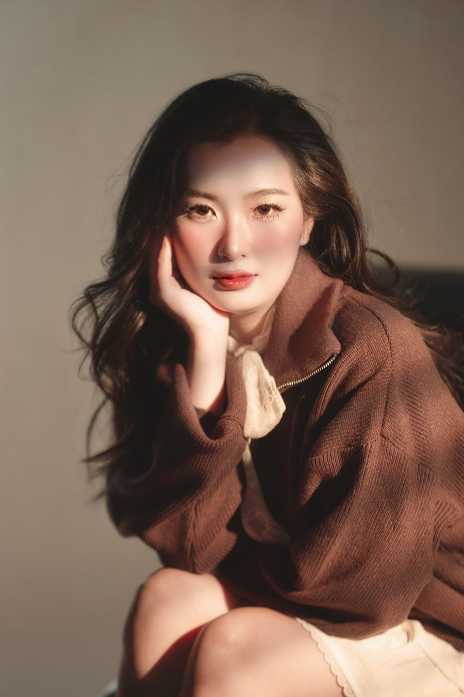

I grow organic traffic and turn it into sign-ups.
Growth manager with 3+ years in SEO, content and conversion. I run the audits, keep the content calendar, build the landing pages and report what worked. Based in Ho Chi Minh City.

What the work produced
- +13%Organic traffic at Gate, from landing page builds, a market-event content cadence and keyword targeting across vertical-specific pages.
- +18.6%App downloads on iOS and Android, from paid UA, ASO and in-product campaign surfacing. App Store and Google Play keyword rankings improved too.
- 2% → 7%Average CTR after running 12+ A/B tests per quarter on creative, copy and placement.
- +20–35%CTR at ProBit Global from rewriting campaign messaging and partner materials.
- 10,000+Participants in the trading competitions and community campaigns I supported.
- 4–6Campaigns a month shipped across six verticals.
How I work
SEO and organic growth
- Run SEO audits and keyword research in Ahrefs and Semrush, then track rankings, queries and traffic in Google Search Console and Google Analytics.
- Build landing pages around vertical-specific keywords and publish market-event content on a steady cadence.
- Use AI tools for keyword suggestions, on-page optimization and first drafts. I review and rework everything before it goes live.
- Track App Store and Google Play keyword rankings in Sensor Tower.
Growth at Gate, indexed to a start of 100
Start = 100 on both bars (scale runs to 125). Increases: +13% and +18.6%.
Content direction and calendar
- Set the direction for social channels and own the content calendar, tying each topic to a product, a campaign and the company’s positioning.
- Brief designers on posts and make social graphics and campaign assets in Canva.
- Manage always-on acquisition and content across Meta, X/Twitter, Telegram and affiliate and KOL channels.
Channels I run, always on
Output
Funnels, landing pages and testing
- Built and rebuilt landing pages and signup flows, matching ad creative to what people see after the click. Registration-to-first-deposit conversion rose quarter on quarter.
- Deployed email campaigns with tracking and adjusted content and targeting from the results.
- Tested landing pages, signup flows and in-app surfacing end to end with Product, Tech and Design before launch, then reported bugs and verified the fixes.
Average CTR after 12+ A/B tests per quarter
Tests covered creative, copy and placement.
Analytics and reporting
- Built a Looker Studio dashboard that pulls Google Analytics, Sensor Tower and HubSpot into one view. Reporting takes less time and stakeholders work from the same numbers.
- Report on traffic, conversion and campaign results, each with a recommended next step.
- At ProBit, produced weekly reports on CTR, conversion, acquisition cost and partner performance.
One dashboard, three sources
Experience
Growth Manager, Gate
SEO, social content, conversion funnels and analytics across six verticals.
Growth Marketing Specialist, ProBit Global
Affiliate and referral campaigns, partner relationships, weekly performance reporting, Telegram and community channels, listing and launch campaigns.
Head of SEA Region Assistant, Gate
Ran the KOL marketing strategy and tracked results to improve ROI. Streamlined support workflows with automation tools to cut response times.
Marketing Performance Executive, Karate Kombat (Gate side project)
Reported on SEO and ASO performance, ran social and search campaigns, kept the brand consistent with Product and Design.
Community Manager, TheCoindesk
Coordinated content translation for key markets and maintained partner and media relationships, including media booking.
Tools and skills
SEO and analytics
Ahrefs, Semrush, Google Search Console, Google Analytics, Looker Studio, Sensor Tower. Keyword research, on-page and technical audits, content optimization for Google and AI search.
Content and social
Canva, content calendar planning, Meta Ads, affiliate and KOL partnerships.
Automation and funnels
HubSpot, email marketing and tracking, landing pages, A/B testing, Claude and ChatGPT for drafting, data cleaning and SEO support.
Languages and education
English (IELTS 7.0), Vietnamese (native), Chinese (communication). BA in External International Relations, University of Economics and Law, 2020 to 2024.